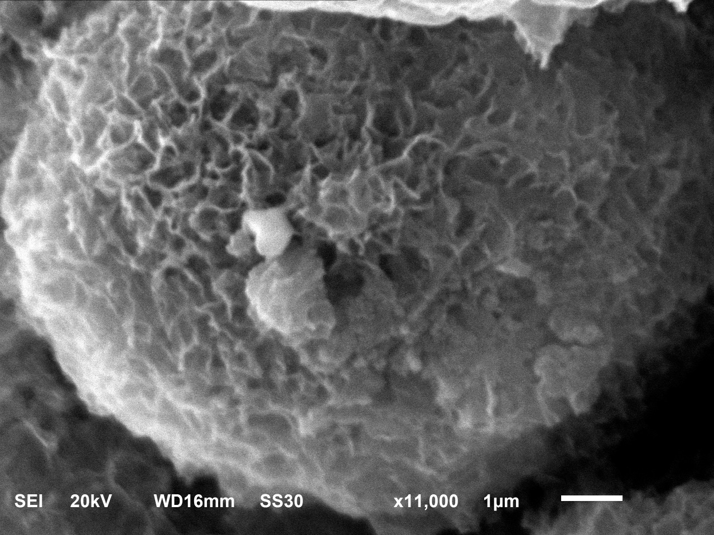

RESEARCH
Materials for a resilient future.
We connect materials science, mechanics and structural engineering to advance sustainable and durable infrastructure.
OUR APPROACH
From the nanoscale to infrastructure.
RISE studies how material composition, processing and structure influence performance. Experiments, modeling and data-driven tools are used to investigate durability, mechanical behavior and functional properties.
A multiscale, materials-science approach
Choose a scale to highlight the research areas connected to it. Most areas span more than one scale.
- nmµmmm
- cmm
- km
not to scale
Research areas
All 6 research areas are shown.
01 / RESEARCH AREA
Low-carbon & circular materials
Designing cementitious systems with alternative and supplementary binders, regenerative biosilica, natural pozzolans and recycled resources. Characterization connects mixture design, microstructure and durability, alongside broader circular resource recovery.
- Resource accessibility of rare earths across secondary feedstocks ↗2026 · Chem Circularity 1(3), 100068
- Reactivity, hydration kinetics, and microstructure evolution of activated copper mine tailings as supplementary cementitious materials ↗2026 · Construction and Building Materials 545, 148108
- Performance, Durability, and Alkali–Silica Reaction of Low-Carbon Concrete Incorporating Soda-Lime Glass Powder and Class F Fly Ash ↗2026 · Journal of Building Engineering 130, 117085
- Circular economy for post-hazard infrastructure restoration: strategies for resilience and resource efficiency ↗2025 · Journal of Sustainability 1(1)
- Assessment of particle packing approach for design of low-clinker, LC3 binders at low water-to-solids ratio ↗2025 · Cement and Concrete Composites 161, 106104

02 / RESEARCH AREA
Composites & structural performance
Developing fiber-reinforced and strain-hardening composites, and studying their mechanical and structural performance.
- Material Development and Characterization of Ductile Lunar and Martian Regolith-Based Cementitious Composite ↗2026 · Journal of Aerospace Engineering 40(1), 04026078
- AI-Aided Design of Carbonated Ductile Well Cement for Enhanced Recovery ↗2026 · ACS Omega
- An adaptive deep neural network-based assessment framework for environmental-cost-mechanical performance of engineered cementitious composites ↗2026 · Computer-Aided Civil and Infrastructure Engineering
- Seismic and wind resistance of natural pozzolan-based engineered cementitious composites: material characterization and numerical analysis ↗2025 · Materials and Structures 58(6), 227
- Novel application of Chilean natural pozzolan for sustainable strain-hardening cementitious composite ↗2023 · Resources, Conservation & Recycling 197, 107098
03 / RESEARCH AREA
Environmental & functional materials
Investigating pollutant uptake and functional properties in cementitious materials.
- Phase Change Materials in Concrete: A Review of Incorporation Methods, Effect on Mechanical and Thermal Properties, and Long-Term Performance ↗Online 2026 · Journal of Materials in Civil Engineering 39(1), 03126010 (2027 issue)
- NOx uptake capacities and sequestration pathways by hydrated cementitious phases ↗2022 · Cement and Concrete Research 159, 106882
- Mineralogy Optimization for Immobilization of Potentially Toxic Elements and Halides in Co-Disposed Flue Gas Desulfurization Brines and Bituminous Coal Fly Ash ↗2022 · Journal of Hazardous Materials Advances 8, 100154
- NOx sequestration by calcium aluminate cementitious materials ↗2021 · Cement and Concrete Research 142, 106381
- Quantification of NOx Uptake in Plain and TiO2-doped Cementitious Materials ↗2019 · Cement and Concrete Research 122, 251–256
04 / RESEARCH AREA
Durability & infrastructure preservation
Studying deterioration, corrosion and preservation strategies to extend infrastructure service life.
- Phase Change Materials in Concrete: A Review of Incorporation Methods, Effect on Mechanical and Thermal Properties, and Long-Term Performance ↗Online 2026 · Journal of Materials in Civil Engineering 39(1), 03126010 (2027 issue)
- Effects of Desert Sands on the Fresh and Hardened Properties of Cement-Based Materials ↗2026 · Journal of Materials in Civil Engineering
- Performance, Durability, and Alkali–Silica Reaction of Low-Carbon Concrete Incorporating Soda-Lime Glass Powder and Class F Fly Ash ↗2026 · Journal of Building Engineering 130, 117085
- Circular economy for post-hazard infrastructure restoration: strategies for resilience and resource efficiency ↗2025 · Journal of Sustainability 1(1)
- Crack sealers for the preservation of concrete bridge decks: A synthesis of a national survey and literature review ↗2023 · Journal of Infrastructure Preservation and Resilience

05 / RESEARCH AREA
Data-driven design & characterization
Combining experimental characterization, quantitative analysis, modeling and data-driven methods to understand and design materials.
- AI-Aided Design of Carbonated Ductile Well Cement for Enhanced Recovery ↗2026 · ACS Omega
- An adaptive deep neural network-based assessment framework for environmental-cost-mechanical performance of engineered cementitious composites ↗2026 · Computer-Aided Civil and Infrastructure Engineering
- In-situ microtomography image segmentation for characterizing strain-hardening cementitious composites under tension using machine learning ↗2023 · Cement and Concrete Research 169, 107164
- How do specific surface area and particle size distribution change when granular media dissolve? ↗Online 2020 · Chemical Engineering Journal 406, 127098 (2021 issue)
- Temperature dependence of gypsum dissolution rates ↗2020 · Cement and Concrete Research 129, 105969
06 / RESEARCH AREA
Extreme environments & space
Studying construction materials in demanding settings, including wellbore systems and lunar and Martian regolith simulants.
- Material Development and Characterization of Ductile Lunar and Martian Regolith-Based Cementitious Composite ↗2026 · Journal of Aerospace Engineering 40(1), 04026078
- Effects of Desert Sands on the Fresh and Hardened Properties of Cement-Based Materials ↗2026 · Journal of Materials in Civil Engineering
- Assessing the cementitious reactivity of lunar and Martian regolith simulants for extraterrestrial construction ↗2026 · npj Space Exploration
- AI-Aided Design of Carbonated Ductile Well Cement for Enhanced Recovery ↗2026 · ACS Omega